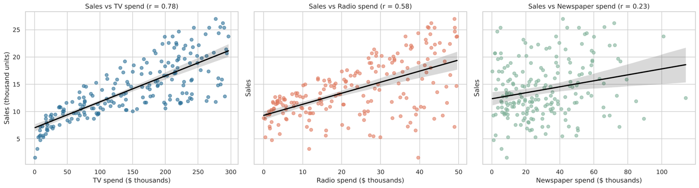
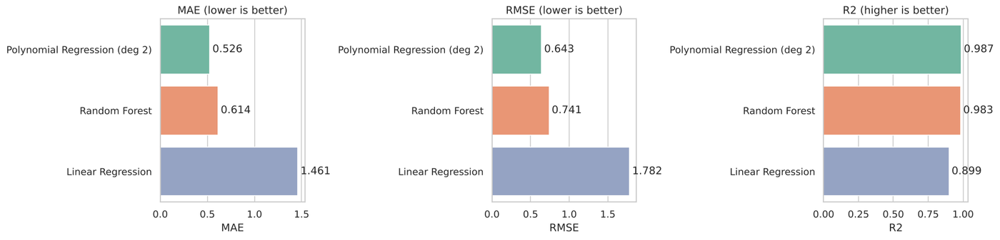
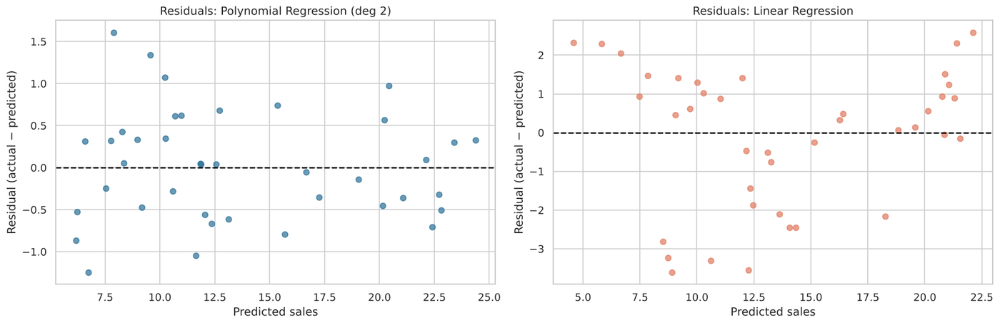
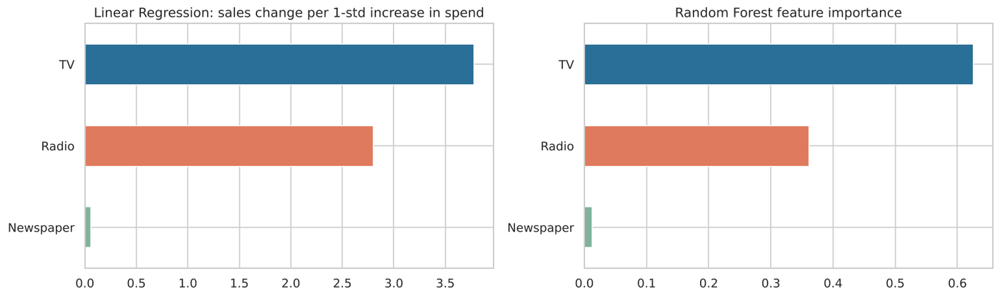

Task 5 · Regression
Sales Prediction
Predicts product sales from TV, Radio and Newspaper ad spend across 200 markets. A degree-2 polynomial regression captures diminishing returns and the TV × Radio synergy that a straight line misses.
0.987R² (vs 0.899 linear)
0.53MAE, thousand units
TVbiggest overall impact
≈0newspaper effect
Try it: plan an ad budget
Plans:
Predicted sales
– thousand units
Total budget: –



